Mysticism ingredients are spiritual materials used in Beyonder potion formulas and ritual work. Browse the local archive by pathway without leaving this site.
Ingredient names, descriptions, and available artwork are preserved from the linked mysticism ingredient list. Sections remain in this single page for quick pathway switching.
Fool Pathway Ingredients
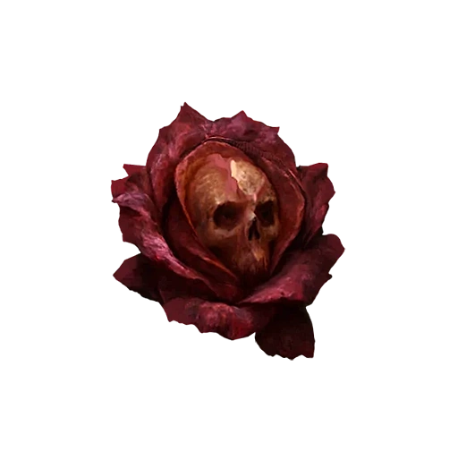
Human-Faced Rose Complete Stalk
- A unique blue rose with red veins running across its petals, creating the illusion of a grinning human face. It emits an eerie illusion of laughter and crying intertwined.
- The main ingredient of the Clown potions.
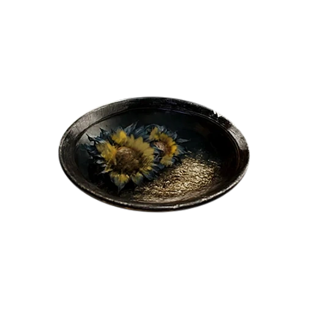
Black-Rimmed Sunflower Powder
- The supplementary ingredient of the Clown potions.
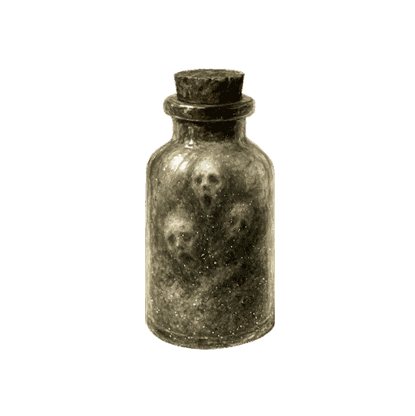
Dust of Ancient Wraiths
- Dust of Ancient Wraiths.
- The main ingredient of the Marionettist potions.
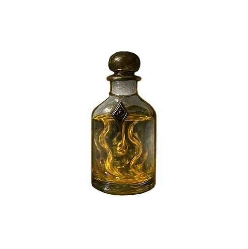
Thousand-faced Hunter's Blood
- A viscous liquid that could change its color based on the change of light. It remains invaluable for crafting Mystical Items, Beyonder weapons, extraordinary scrolls, or for inscribing symbols in ritualistic magic, retaining its precious nature.
- The main ingredient of the Faceless potions.
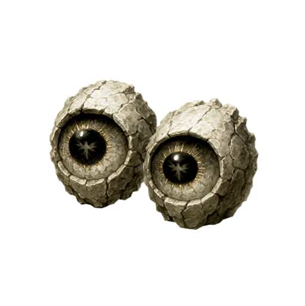
Six-Winged Gargoyle Eyes
- An eyeball emitting a red glow, possessing rich in spirituality and had some hint of strangeness. It could be used in a ritual to create charms.
- The supplementary ingredient of the Marionettist potions.
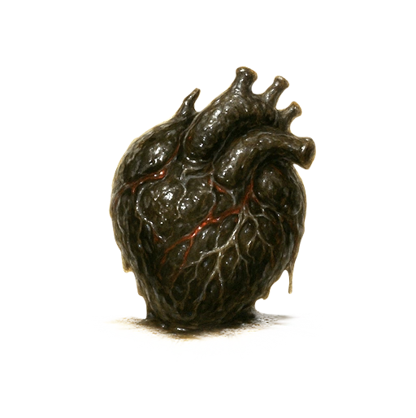
Dark Demonic Wolf's Heart
- A heart of the Dark Demonic Wolf.
- The main ingredient of the Miracle Invoker potions.
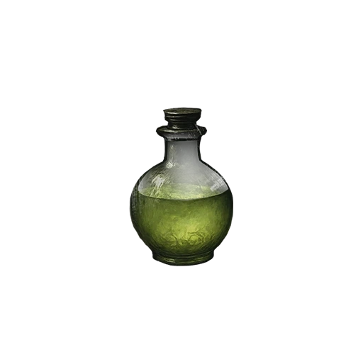
Fantasy Grass Essential Oil
- The supplementary ingredient of the Magician, Briber potions.
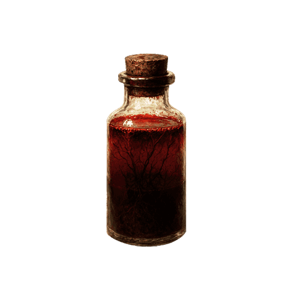
Hound of Fulgrim Blood
- Thick, dark-red blood of the Hound of Fullgrim.
- The supplementary ingredient of the Scholar of Yore potions.
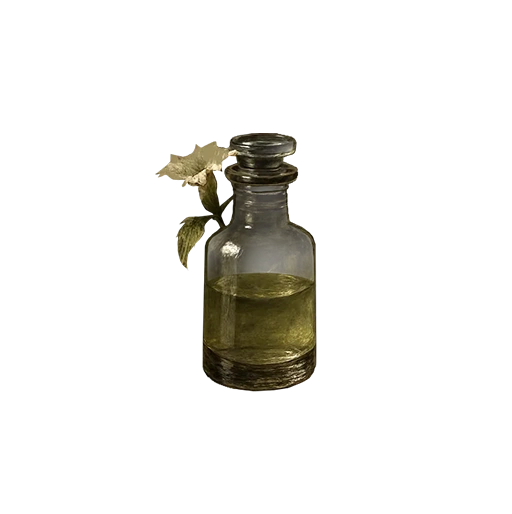
Tornapple (Jimsonweed) Juice
- The supplementary ingredient of the Clown, Faceless, Witch potions.
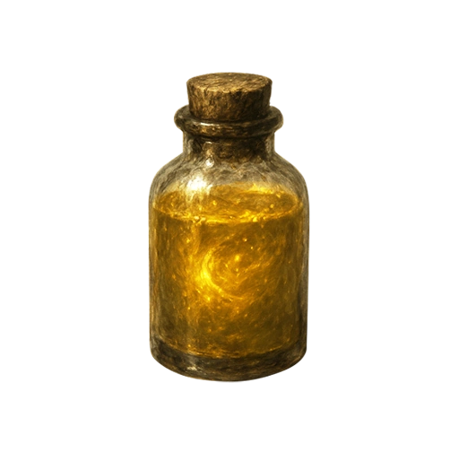
Spring Water of Golden Spring
- Also known as the Spring of the Elves and the Sonia Golden Springs. The spring water from Sonia Island. A pale gold liquid that spreads out slowly, maintaining a clear and transparent appearance. Its presence invokes a subconscious sense of thirst, as if one longs to drink a cup of it to quench their thirst. It was a commonly seen liquid and was an object with rich spirituality.
- The supplementary ingredient of the Marionettist potions.
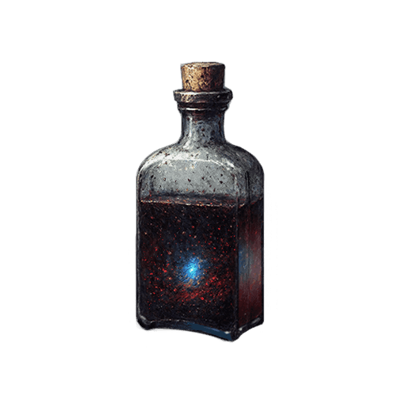
Lavos Squid's Blood
- The blood of Lavos Squid's. The unique substance exhibits a striking blue hue. Occasionally, it emits illusory bubbles, suggestive of a connection to the spiritual realm. However, its distinctive properties degrade rapidly under sunlight, necessitating storage in opaque containers to preserve its unique qualities.
- The main ingredient of the Seer potions.
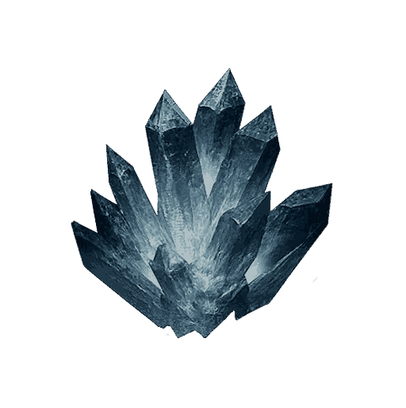
Star Crystal
- An exceptionally pure crystal with a gelatinous appearance reminiscent of Earthly jelly. Despite its lack of hardness, it reflects light in a mesmerizing manner, appearing to contain a luminous void of stars when illuminated by blue light. Its properties make it an ideal material for crafting divination crystals.
- The main ingredient of the Seer potions.
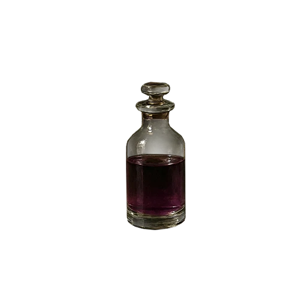
Poison Hemlock
- A highly toxic substance that induces numbness throughout the body, potentially leading to death if ingested. Historically, it has been notorious as a method of suicide due to its potent effects.
- The supplementary ingredient of the Seer, Clown potions.
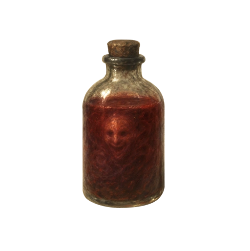
Bizarro Bane's Blood
- The blood of Bizarro Bane.
- The supplementary ingredient of the Bizarro Sorcerer potions.
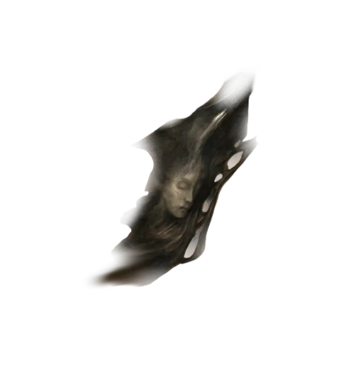
Human-Skined Shadow's Characteristic
- A Characteristic of Human-Skinned Shadow. A massive diamond with numerous facets, each reflecting light to reveal a multitude of faces. The faces are densely packed, layered, and create a dizzying effect when observed.
- The main ingredient of the Faceless potions.
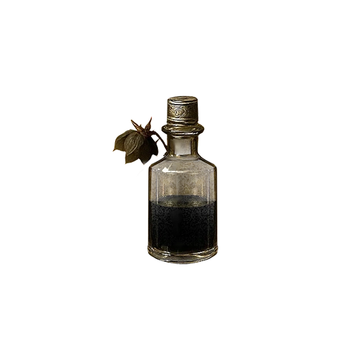
Black Jimsonweed Juice
- The supplementary ingredient of the Faceless, Briber, Pleasure potions.
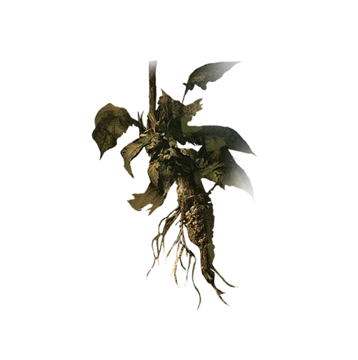
Mist Treant's True Root
- A heart-shaped, brown, palm-sized root, wrinkled in appearance resembling an old man's skin. Its back, however, is smooth and exquisite, akin to a gem. It exhibits slight expansion and contraction, suggesting a degree of vitality.
- The main ingredient of the Magician potions.
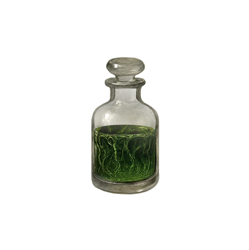
Mist Treant Juice
- A light green and sparkling, making it look very delicious.
- The supplementary ingredient of the Magician potions.
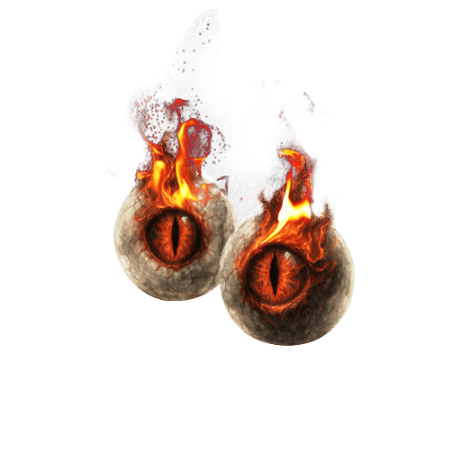
Hound of Fulgrim Eyes
- The Dark-red burning flames eyeballs of the Hound of Fullgrim.
- The main ingredient of the Scholar of Yore potions.
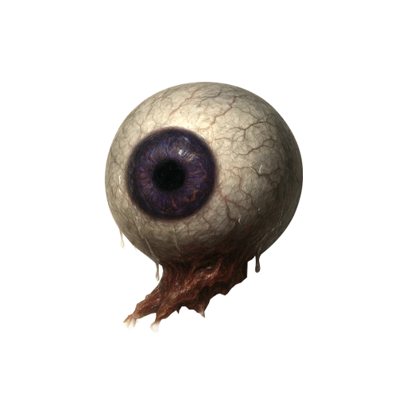
Bizarro Bane's Main Eye
- The main eye of Bizarro Bane.
- The main ingredient of the Bizarro Sorcerer potions.
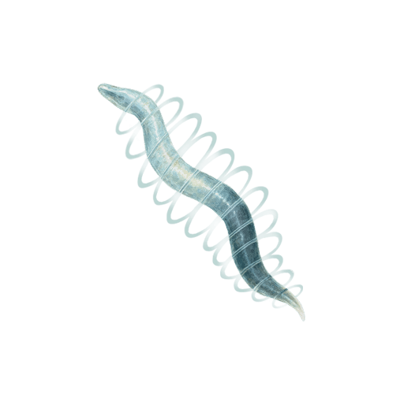
Worm of Time
- A translucent worm with twelve transparent rings. It serves as vessels for creating avatars and components of the Error Pathway's Mythical Creature Form. After the death of the avatar, the Worm of Time initially contains sufficient Beyonder characteristics, but these quickly dissipate and return to the main body.
- The supplementary ingredient of the Miracle Invoker, Planeswalker potions.
Golden Grapevines
- The supplementary ingredient of the Bizarro Sorcerer potions.
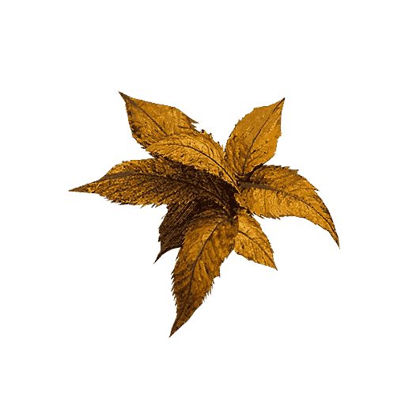
Gold Mint Leaves
- Leaves emitting a fresh and stimulating scent.
- The supplementary ingredient of the Seer potions.
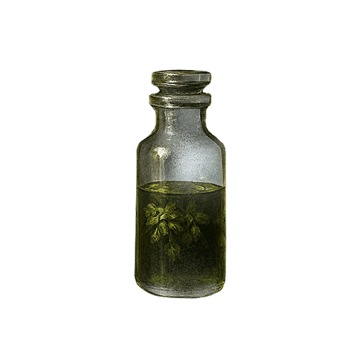
Night Vanilla Liquids
- A herb native to the red moon, possessing unique properties. Its essence can be extracted and preserved as an essential oil for various uses.
- The supplementary ingredient of the Seer potions.
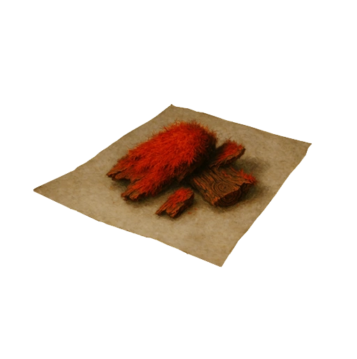
Red-hair Birch Bark
- The supplementary ingredient of the Bizarro Sorcerer potions.
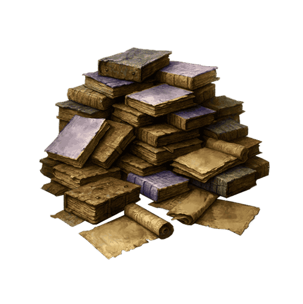
Real Ancient Historical Records
- A stack of historical papers.
- The supplementary ingredient of the Scholar of Yore potions.
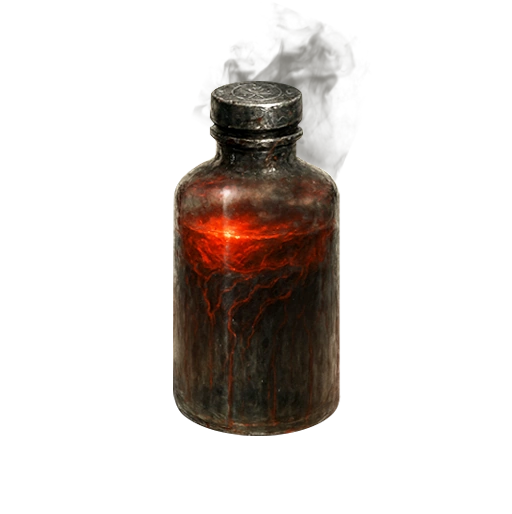
Dark Demonic Wolf's Blood
- A Deep black blood of the Dark Demonic Wolf.
- The supplementary ingredient of the Miracle Invoker potions.
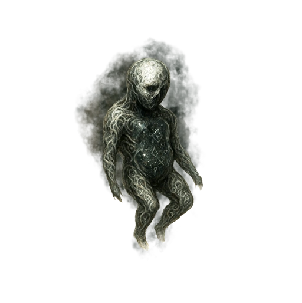
Spirit World Plunderer True Soul
- True Soul Body of a Spirit World Plunderer. A palm-sized entity comprised of coiled maggots resembling a human form, filled with colorless liquid. Bubbles emit black light, revealing intricate patterns and symbols embodying knowledge, power, transformation, secrets, strangeness, and madness.
- The main ingredient of the Bizarro Sorcerer potions.
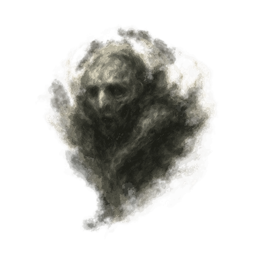
Remnant Spirituality of Ancient Wraiths
- Phosphorescent spots floating within the tube exhibit a peculiar behavior upon contact with the glass wall. They expand, coalescing into a face with blurred features that morph into an open mouth, emitting a silent scream.
- The supplementary ingredient of the Marionettist potions.
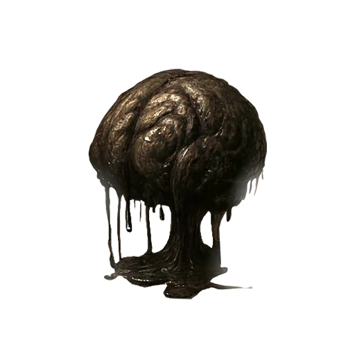
Mutated pituitary gland of a Thousand-faced Hunter
- Resembling a yellowish-brown peeled walnut with grooves and ridges reminiscent of a brain, this organ exhibits a constantly shifting appearance. At times, it appears gray and wrinkled, while at others, it becomes dark brown and extremely smooth. The colors intertwine, occasionally outlining a featureless face.
- The main ingredient of the Faceless potions.
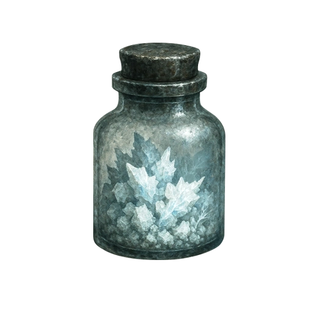
White Frost Crystal of Demonic Wolf of Fog
- A crystalline frost of the Demonic Wolf of Fog. It emanating cold air.
- The supplementary ingredient of the Scholar of Yore potions.
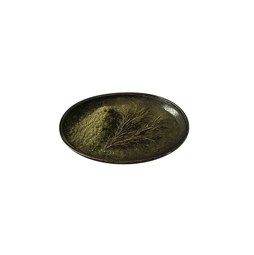
Golden Cloak Grass Powder
- The supplementary ingredient of the Clown potions.
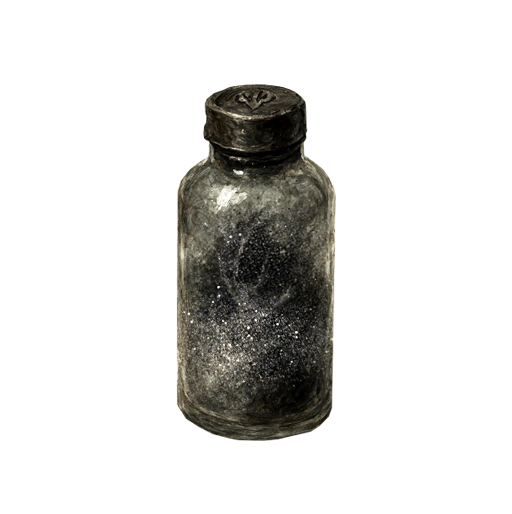
Spirit World Plunderer's Dust
- The remain dust of a Spirit World Plunderer.
- The main ingredient of the Bizarro Sorcerer potions.
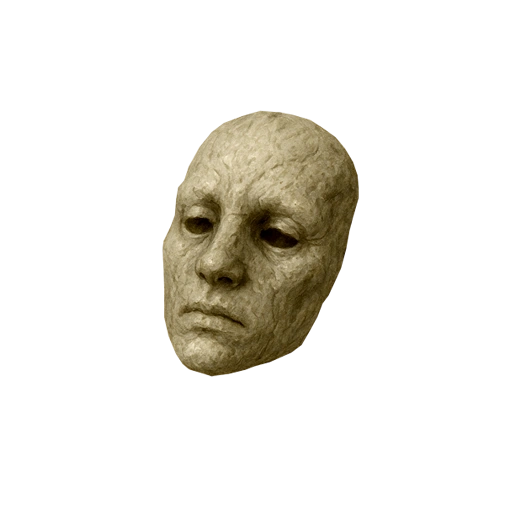
Fingernail-Sized Self-made Rubber Mask
- The supplementary ingredient of the Bizarro Sorcerer potions.
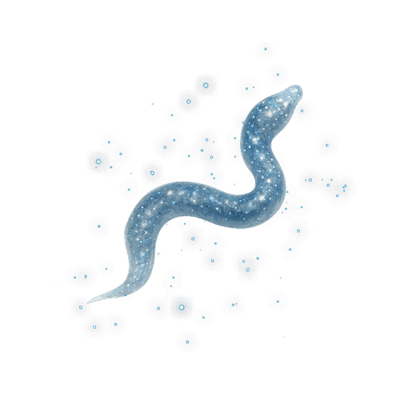
Worm of Star
- An insect formed from resplendent starlight, its body is bent into a semi-circle, forming a magical glow that resembled illusory doors. It serves as components of the Door Pathway's Mythical Creature Form.
- The supplementary ingredient of the Miracle Invoker, Planeswalker potions.
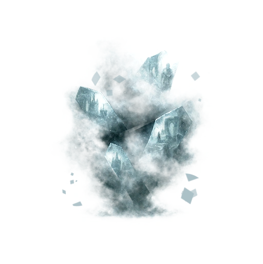
Fog of History
- The supplementary ingredient of the Fool potions.
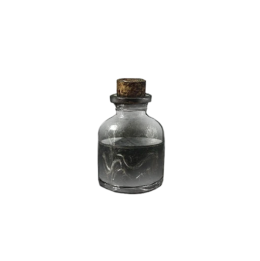
Dark Patterned Black Panther Spinal Fluid
- A seemingly translucent liquid with intricate clarity levels, discernible upon close inspection. Transparency varies at different levels, satisfying those with obsessive-compulsive tendencies.
- The main ingredient of the Magician potions.
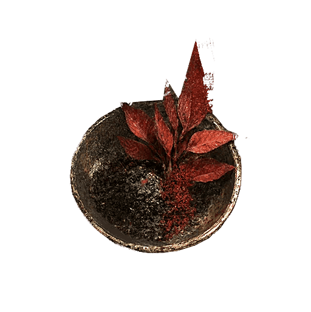
Dragon Blood Grass Powder
- A deep black powder.
- The supplementary ingredient of the Seer potions.
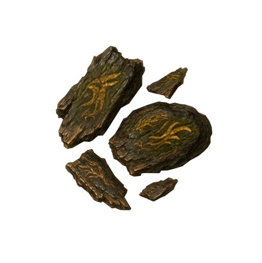
Drago Bark
- The supplementary ingredient of the Marionettist potions.
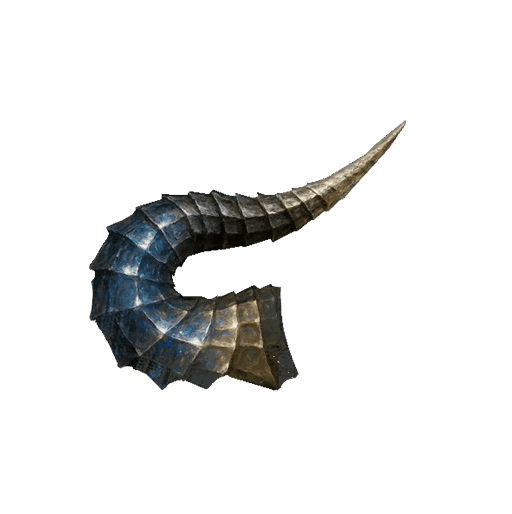
Hornacis Gray Mountain Goat Horn
- A palm-sized horn from the gray mountain goat, resembling a miniature version of a typical goat horn. It is crystal clear, with swirling colors and faint layers of distinctive patterns.
- The main ingredient of the Clown potions.
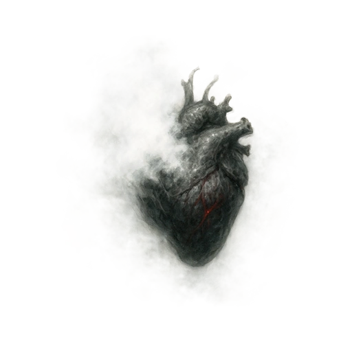
Demonic Wolf of Fog's Transformed Heart
- A peculiar Demonic Wolf of Fog's heart composed of wisps of white mist.
- The main ingredient of the Scholar of Yore potions.
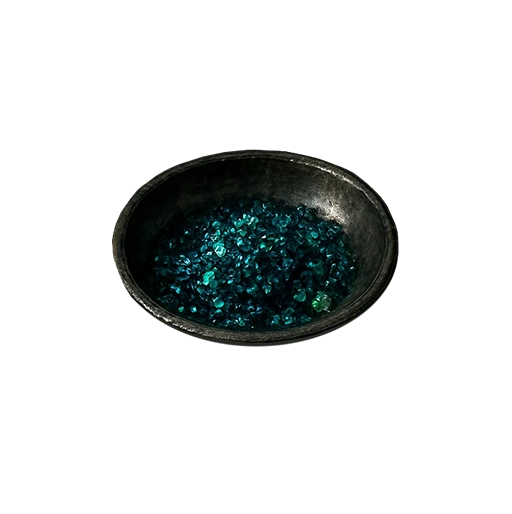
Droplet Gem Powder
- A fine powder derived from gemstones.
- The supplementary ingredient of the Magician potions.
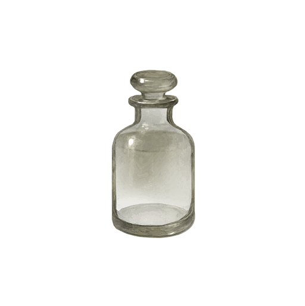
Purified Water
- Water that has undergone repeated distillation, resulting in the removal of impurities and contaminants, leaving behind a high degree of purity.
- The supplementary ingredient of the Seer, Magician, Trickmaster, Spectator, Telepathist, Instigator, Witch, Pleasure potions.
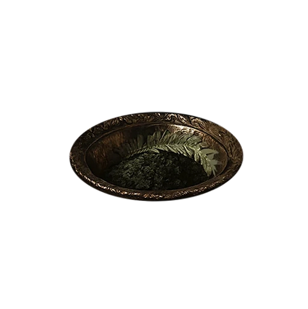
Dragon Tooth Grass Powder
- The supplementary ingredient of the Faceless, Telepathist potions.
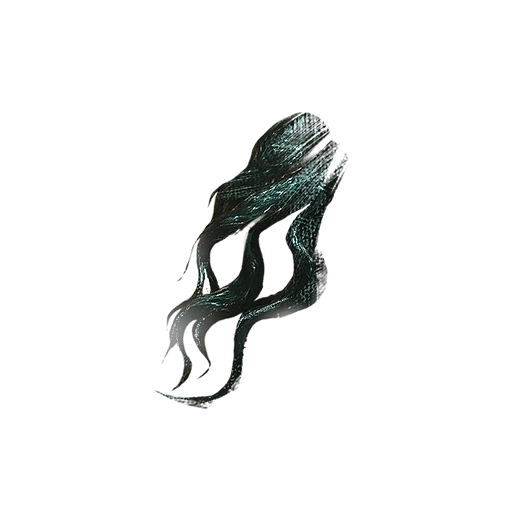
Deep-sea Naga Hair Strand
- A dark blue hair strand of Deep-sea Naga. It resembling miniature snakes.
- The supplementary ingredient of the Faceless potions.
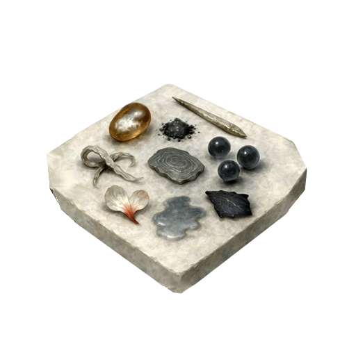
Spirit World Specialties
- The supplementary ingredient of the Attendant of Mysteries potions.
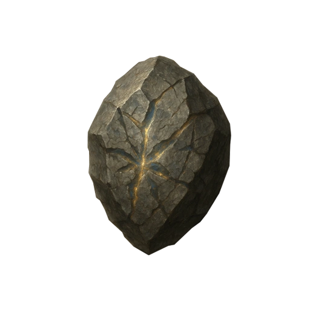
Six-Winged Gargoyle's Core Crystal
- The core crystal of Six-Winged Gargoyle. A grayish-white translucent crystal, serving as the central crystalline structure of the Six-Winged Gargoyle.
- The main ingredient of the Marionettist potions.
Door Pathway Ingredients
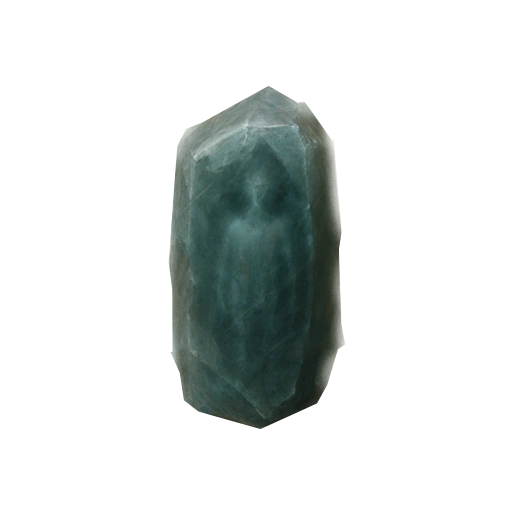
Crystal Left by a Mist Watcher
- The main ingredient of the Wanderer potions.
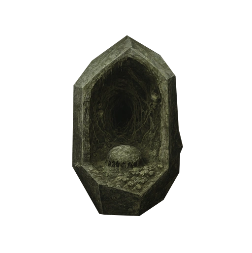
Siskun Demon Worm's Nest
- The supplementary ingredient of the Secrets Sorcerer potions.
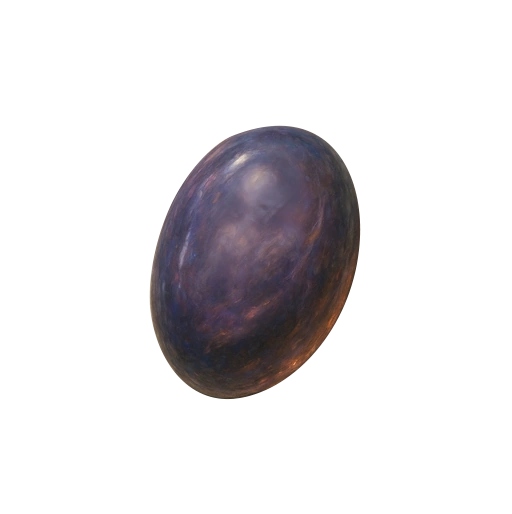
Illusion Crystal
- The main ingredient of the Apprentice potions.
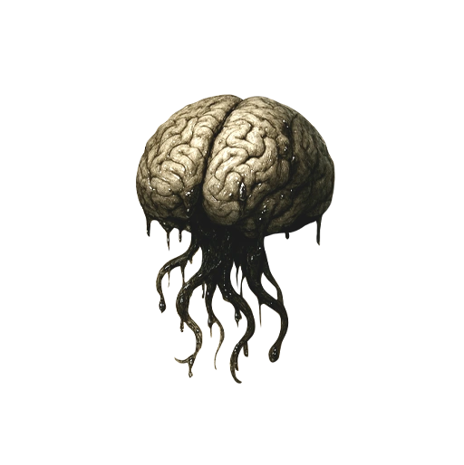
Asmann's Complete Brain
- A complete brain of Asmann. The blob appeared as a grayish-white, translucent, and wrinkled object. Without the gold enclosing it, the brain of an Asmann would incessantly influence one, inducing hallucinations until mental faculties were lost.
- The main ingredient of the Scribe potions.
Active Void
- The main ingredient of the Planeswalker potions.
Hornbeam Essential Oils
- The supplementary ingredient of the Trickmaster, Reaper potions.
Spirit Eater's Stomach Pouch
- The main ingredient of the Trickmaster potions.
One's Favorite Food or Drink
- The supplementary ingredient of the Key of Stars potions.
Clematis Powder
- The supplementary ingredient of the Astrologer potions.
Wandering Skin's Pus
- The supplementary ingredient of the Wanderer potions.
Strong Liquor
- The supplementary ingredient of the Astrologer potions.
Shadowless Demonic Wolf's Blood
- The supplementary ingredient of the Traveler potions.
Wandering Asteroid's Core
- The supplementary ingredient of the Key of Stars potions.
Ankh Gate's Ashes
- The supplementary ingredient of the Secrets Sorcerer potions.
Trapped Ghost Residue Powder
- The supplementary ingredient of the Traveler potions.
Astronomical, Geographical, and Folkloric Knowledge of Three Galaxies
- The supplementary ingredient of the Key of Stars potions.
Spirit World-Contaminated Soil
- The supplementary ingredient of the Apprentice potions.
Compass Linked to the Astral World
- The supplementary ingredient of the Key of Stars potions.
Siskun Demon Worm
- The main ingredient of the Traveler potions.
Worm of Time
- A translucent worm with twelve transparent rings. It serves as vessels for creating avatars and components of the Error Pathway's Mythical Creature Form. After the death of the avatar, the Worm of Time initially contains sufficient Beyonder characteristics, but these quickly dissipate and return to the main body.
- The supplementary ingredient of the Miracle Invoker, Planeswalker potions.
Interdimensional Hunter's Brain
- The main ingredient of the Planeswalker potions.
Seawater, Lake Water, Glacier Water
- The supplementary ingredient of the Scribe potions.
Golden Phoenix's Eye
- The main ingredient of the Secrets Sorcerer potions.
Walnut
- The supplementary ingredient of the Secrets Sorcerer potions.
Star Chart Drawn with Spirit Blood
- The supplementary ingredient of the Traveler potions.
Shadowless Demonic Wolf's Heart
- The main ingredient of the Traveler potions.
Mercury
- The supplementary ingredient of the Scribe potions.
Goat's Beard Hydrosol
- The supplementary ingredient of the Apprentice potions.
Withered Grapevine
- The supplementary ingredient of the Astrologer potions.
Deep Sea Marlin's Blood
- The main ingredient of the Trickmaster potions.
String Grass Powder
- The supplementary ingredient of the Trickmaster potions.
Lake Water Freshly Reflecting the Cosmos
- The supplementary ingredient of the Secrets Sorcerer potions.
Mist Watcher's Eyelid
- The supplementary ingredient of the Wanderer potions.
Flower Grown from a Corpse
- The supplementary ingredient of the Apprentice potions.
Lavos Squid's Crystallized Blood
- The crystallized blood of Lavos Squid's.
- The main ingredient of the Astrologer potions.
Ancient Well Water
- The supplementary ingredient of the Apprentice potions.
Worm of Star
- An insect formed from resplendent starlight, its body is bent into a semi-circle, forming a magical glow that resembled illusory doors. It serves as components of the Door Pathway's Mythical Creature Form.
- The supplementary ingredient of the Miracle Invoker, Planeswalker potions.
Meteorite Crystal
- The main ingredient of the Astrologer potions.
Gregrace's Left Claw
- The left claw of the Phoenix Ancestor, Gregrace. Serves as an alternative for a Key of Stars Beyonder Characteristic.
- The main ingredient of the Key of Stars potions.
Wandering Skin
- The main ingredient of the Wanderer potions.
Honeysuckle Essential Oil
- The supplementary ingredient of the Scribe potions.
Star Water From the Ritual Site
- The supplementary ingredient of the Wanderer potions.
Golden Phoenix's Feather
- The supplementary ingredient of the Secrets Sorcerer potions.
White Mustard Seeds
- The supplementary ingredient of the Wanderer potions.
Purified Water
- Water that has undergone repeated distillation, resulting in the removal of impurities and contaminants, leaving behind a high degree of purity.
- The supplementary ingredient of the Seer, Magician, Trickmaster, Spectator, Telepathist, Instigator, Witch, Pleasure potions.
Diary Pages over 22 Years Old
- The supplementary ingredient of the Scribe potions.
Lemon Balm Powder
- The supplementary ingredient of the Traveler potions.
Worm of Spirit
- A transparent maggot with three-dimensional patterns. It serves as components of the Fool Pathway Mythical Creature Form. Each Worm of Spirit contains a part of the Spirit Body. The death of each Worm of Spirit causes damage to the Spirit Body.
- The supplementary ingredient of the Planeswalker potions.
Ankh Gate's Foundation
- The main ingredient of the Secrets Sorcerer potions.
Siskun Demon Worm Leader
- The main ingredient of the Secrets Sorcerer potions.
Cursed artifacts of an ancient wraith
- A cursed artifacts of an Ancient Wraiths.
- The main ingredient of the Scribe potions.
Octopus Eyeballs
- The supplementary ingredient of the Astrologer potions.
Gem-Devouring Worm
- The main ingredient of the Apprentice potions.
Error Pathway Ingredients
Water Violet Hydrosol
- The supplementary ingredient of the Mentor of Deceit potions.
Soul‑Snatcher King's Vertical Eye
- The main ingredient of the Trojan Horse of Destiny potions.
Another's Blood
- The supplementary ingredient of the Marauder, Shadow Ascetic potions.
Giant King's Court Priest's Postmortem Crystal
- The main ingredient of the Trojan Horse of Destiny potions.
Moonstone
- The supplementary ingredient of the Cryptologist potions.
Sphinx's Brain
- The main ingredient of the Cryptologist potions.
Celestine
- The supplementary ingredient of the Dream Stealer potions.
Blasphemous Priest's Fungal Shroud
- The supplementary ingredient of the Mentor of Deceit potions.
Blood‑Speckled Black Mosquito
- The main ingredient of the Marauder potions.
Soul‑Snatcher's Postmortem Crystal
- The main ingredient of the Parasite potions.
Dream‑Eating Rat's Blood
- The supplementary ingredient of the Dream Stealer potions.
Swamp Giant's Palms
- The main ingredient of the Mentor of Deceit potions.
Verbena Powder
- The supplementary ingredient of the Marauder potions.
Sapphire
- The supplementary ingredient of the Marauder potions.
De‑Spiritualized Depraved Breath
- The supplementary ingredient of the Dream Stealer potions.
Ancient River Water
- The supplementary ingredient of the Trojan Horse of Destiny potions.
Lavender Hydrosol
- The supplementary ingredient of the Dream Stealer potions.
Soul-Bewitching Insect Colony's Larvae
- The main ingredient of the Swindler potions.
Citrine
- The supplementary ingredient of the Prometheus potions.
False History Believed to be True
- The supplementary ingredient of the Trojan Horse of Destiny potions.
Puppet Evil Insect
- The main ingredient of the Parasite potions.
Ancient Clock
- The supplementary ingredient of the Worm of Time potions.
Another's Tears
- The supplementary ingredient of the Swindler potions.
Used Almanac
- The supplementary ingredient of the Worm of Time potions.
Lapis Lazuli
- The supplementary ingredient of the Swindler potions.
Blasphemous Priest's Core
- The main ingredient of the Mentor of Deceit potions.
Beacons Extracted from the River of Fate
- The supplementary ingredient of the Error potions.
Imprisoned Soul
- The supplementary ingredient of the Parasite potions.
Soul‑Snatcher's Blood
- The supplementary ingredient of the Parasite potions.
Spirit of Depraved Breath
- The main ingredient of the Dream Stealer potions.
Soul-Bewitching Insect Colony's Mucus
- The supplementary ingredient of the Cryptologist potions.
Self‑Designed Cipher
- The supplementary ingredient of the Cryptologist potions.
Aurmir's Right Eye
- The right eye of the Giant King, Aurmir. Serves as an alternative for a Worm of Time Beyonder Characteristic.
- The main ingredient of the Worm of Time potions.
Soul-Bewitching Insect Colony's Adult Insect
- The main ingredient of the Cryptologist potions.
White Chestnut Balm
- The supplementary ingredient of the Swindler potions.
Cloaked Specter's Residual Powder
- The supplementary ingredient of the Prometheus potions.
Swamp Giant's Blood
- The supplementary ingredient of the Mentor of Deceit potions.
Tinder
- The supplementary ingredient of the Prometheus potions.
Segment of Concealed Fate
- The supplementary ingredient of the Worm of Time potions.
Candle Devourer's Core
- The main ingredient of the Marauder potions.
Freshly Stolen Wine
- The supplementary ingredient of the Prometheus potions.
Nail Fragments From Different People
- The supplementary ingredient of the Marauder potions.
Cherry Plum Juice
- The supplementary ingredient of the Parasite potions.
Spirit World Wraiths Who Died Due to the Advancer's Deceit
- The supplementary ingredient of the Mentor of Deceit potions.
Puppet Evil Insect Secretions
- The supplementary ingredient of the Parasite potions.
Gold
- The supplementary ingredient of the Mentor of Deceit potions.
Cloaked Specter's Attachment
- The main ingredient of the Prometheus potions.
Human‑Faced Pitcher Plant
- The main ingredient of the Swindler potions.
Dream‑Eating Rat's Heart
- The main ingredient of the Dream Stealer potions.
Amethyst
- The supplementary ingredient of the Parasite potions.
Another's Tears Shed Due to Shattered Ideals
- The supplementary ingredient of the Dream Stealer potions.
Larch Essential Oil
- The supplementary ingredient of the Prometheus potions.
Wild Rose
- The supplementary ingredient of the Cryptologist potions.
Crystal Threadworm
- The main ingredient of the Prometheus potions.
Sphinx's Blood
- The supplementary ingredient of the Cryptologist potions.
Visionary Pathway Ingredients
Rainbow Salamander Complete Pituitary Gland
- A complete pituitary gland of Rainbow Salamander. A palm-sized object constantly changing in color, characterized by its soft texture, lustrous hues, and filled with ridges.
- The main ingredient of the Telepathist potions.
Mind Dragon's Complete Pituitary Gland (Adolescent)
- The main ingredient of the Hypnotist potions.
Tree Mentor's Golden Leaf
- The supplementary ingredient of the Manipulator potions.
Goat-Horned Blackfish Blood
- The main ingredient of the Spectator potions.
Mind Dragon's Complete Brain (Adult)
- The main ingredient of the Dreamwalker potions.
Mind Dragon's Blood (Adult)
- The supplementary ingredient of the Dreamwalker potions.
Cow Teeth Paeonol Powder
- The supplementary ingredient of the Spectator potions.
Mind Dragon's Complete Brain (Elderly)
- The main ingredient of the Manipulator potions.
Mirror Dragon's Eyes
- The main ingredient of the Psychiatrist potions.
Matured Manhal Fish's Eyeball
- An eyeball of matured Manhal Fish.
- The main ingredient of the Spectator potions.
Black-Hunting Giant Lizard's Spinal Fluid
- The main ingredient of the Hypnotist potions.
Tree of Elder's Fruit
- The main ingredient of the Psychiatrist potions.
Mind Illusion Crystal
- The main ingredient of the Dreamwalker potions.
Mirror Dragon's Blood
- The supplementary ingredient of the Psychiatrist potions.
Autumn Crocus Essence
- The supplementary ingredient of the Spectator potions.
Tree Mentor Crystalline Heart
- The main ingredient of the Manipulator potions.
Mind Dragon's Blood (Elderly)
- The supplementary ingredient of the Manipulator potions.
Purified Water
- Water that has undergone repeated distillation, resulting in the removal of impurities and contaminants, leaving behind a high degree of purity.
- The supplementary ingredient of the Seer, Magician, Trickmaster, Spectator, Telepathist, Instigator, Witch, Pleasure potions.
Drop of Tears
- Drop of tears from different creatures that were shed due to intense emotion
- The supplementary ingredient of the Manipulator potions.
Dream Catcher's Heart
- The main ingredient of the Dreamwalker potions.
Illusory Chime Tree's Fruit
- A fist-sized, colorless, translucent fruit of the Illusory Chime Tree.
- The main ingredient of the Hypnotist potions.
Pure White Elf Flowers
- The supplementary ingredient of the Telepathist potions.
Dragon Tooth Grass Powder
- The supplementary ingredient of the Faceless, Telepathist potions.
Elf Flower Petals
- The supplementary ingredient of the Spectator potions.
Chestnut Spore
- The supplementary ingredient of the Telepathist potions.
Farsman Rabbit's Spinal Fluid
- The main ingredient of the Telepathist potions.
Sun Pathway Ingredients
Crystal Sunflower
- The main ingredient of the Bard potions.
Aconite Juice
- The supplementary ingredient of the Light Supplicant potions.
Mirror Hedgehog Blood
- The main ingredient of the Light Supplicant potions.
Dawn Rooster's Blood
- The supplementary ingredient of the Solar High Priest potions.
Radiance Spirit Pact Tree's Juice
- The supplementary ingredient of the Notary potions.
King of Dawn Roosters' Blood
- The supplementary ingredient of the Priest of Light potions.
Rosemary
- A shrub with fragrant, evergreen, needle-like leaves and white, pink, purple, or blue flowers.
- The main ingredient of the Priest of Light potions.
Dawn Rooster's Red Comb
- The main ingredient of the Solar High Priest potions.
Red Wine
- The supplementary ingredient of the Briber, Hunter, Secrets Suppliant, Listener, Bard, Light Suppliant, Midnight Poet potions.
Sun Divine Bird's Blood
- The supplementary ingredient of the Unshadowed potions.
Midsummer Grass
- The supplementary ingredient of the Bard potions.
Holy Brilliance Rock Liquid
- The supplementary ingredient of the Unshadowed potions.
Golden-Rimmed Sunflower
- The supplementary ingredient of the Light Supplicant potions.
Tree of Elder's Crystalized Roots
- The main ingredient of the Notary potions.
Heart of a Magma Titan
- The main ingredient of the Light Supplicant potions.
Fire Bird's Tail Feather
- The main ingredient of the Bard potions.
Adult Flint Bird's Tail Feather
- The main ingredient of the Bard potions.
Elf Dark Leaf
- The supplementary ingredient of the Light Supplicant potions.
Siren Rock
- The main ingredient of the Bard potions.
Rock Water
- The supplementary ingredient of the Priest of Light potions.
Powder of Dazzling Soul
- The main ingredient of the Light Supplicant potions.
Magma Heart Powder
- The supplementary ingredient of the Unshadowed potions.
King of Dawn Roosters' Red Comb
- The main ingredient of the Priest of Light potions.
Fingered Citron Powder
- The supplementary ingredient of the Solar High Priest potions.
Singing Sunflower
- The main ingredient of the Bard potions.
Solidified Magma
- The supplementary ingredient of the Solar High Priest potions.
Golden Blood of the Sun God
- The main ingredient of the Unshadowed potions.
Radiance Spirit Pact Tree's Fruit
- The main ingredient of the Solar High Priest potions.
Spirit Pact Bird's Feather
- The main ingredient of the Notary potions.
Holy Brilliance Rock
- The main ingredient of the Unshadowed potions.
Mutated Fingered Citron Juice
- The supplementary ingredient of the Unshadowed potions.
Sun Divine Bird's Tail Feather
- The main ingredient of the Unshadowed potions.
Fingered Citron Juice
- The supplementary ingredient of the Priest of Light potions.
Pure White Brilliant Rock
- The main ingredient of the Priest of Light potions.
Brilliance Rock
- The main ingredient of the Light Supplicant potions.
July Wine Juice
- The supplementary ingredient of the Bard potions.
Sun Essential Oil
- Extracted from a combination of black-rimmed sunflower, golden-rimmed sunflower, and white-rimmed sunflower.
- The supplementary ingredient of the Solar High Priest potions.
Aqua Fern Juice
- The supplementary ingredient of the Notary potions.
White-Rimmed Sunflower
- The supplementary ingredient of the Notary potions.
Tyrant Pathway Ingredients
Blue Shadow Falcon's Crystalline Feathers
- A crystalline feather of Blue Shadow Falcon.
- The main ingredient of the Wind-blessed potions.
Murloc's Bladder
- A bladder from a Murloc, with an interior lined in black velvet. At its center lies a round, transparent object that resembles a gem. It emits an azure aqueous light, evoking the image of a radiant gem.
- The main ingredient of the Sailor potions.
Dragon-Eyed Sea Condor's Eyeballs
- description
- The main ingredient of the Wind-blessed potions.
White Tower Pathway Ingredients
No entries are currently listed for this pathway in the linked mysticism ingredient list.
Hanged Man Pathway Ingredients
Another's Blood
- The supplementary ingredient of the Marauder, Shadow Ascetic potions.
Red Wine
- The supplementary ingredient of the Briber, Hunter, Secrets Suppliant, Listener, Bard, Light Suppliant, Midnight Poet potions.
Darkness Pathway Ingredients
Red Wine
- The supplementary ingredient of the Briber, Hunter, Secrets Suppliant, Listener, Bard, Light Suppliant, Midnight Poet potions.
Demonic Wolf of Secrecy's Blood
- A Deep black blood of the Demonic Wolf of Secrecy.
- The supplementary ingredient of the Servant of Concealment potions.
Death Pathway Ingredients
Desiccated mature Black-spotted Frog
- The main ingredient of the Corpse Collector potions.
Twilight Giant Pathway Ingredients
Stone Golem's Core
- A core of a Stone Golem.
- The main ingredient of the Guardian potions.
Demoness Pathway Ingredients
Demon Throat Honeyguide's Syrinx
- The main ingredient of the Instigator potions.
Blue Jimsonweed Juice
- The supplementary ingredient of the Instigator potions.
Black Widow Spider Silk Gland
- The main ingredient of the Pleasure potions.
Tornapple (Jimsonweed) Juice
- The supplementary ingredient of the Clown, Faceless, Witch potions.
Gorgon Blood
- The supplementary ingredient of the Unaging potions.
Mistletoe's Fresh Branch
- The supplementary ingredient of the Despair potions.
Plague Mother Serpent's Bile
- The supplementary ingredient of the Despair potions.
Black Jimsonweed Juice
- The supplementary ingredient of the Faceless, Briber, Pleasure potions.
Mirror God Fragments
- The supplementary ingredient of the Unaging potions.
Abyss Demonic Fish Blood
- The main ingredient of the Witch potions.
Dark Prowler's Poison Sac
- The main ingredient of the Instigator potions.
500-year-old Antique Mirror
- An antique mirror over 500 years old with a corresponding mirror realm.
- The main ingredient of the Unaging potions.
Seriously Ill Human's Blood
- The supplementary ingredient of the Affliction potions.
Succubus's Hair Complete Remnants
- The supplementary ingredient of the Pleasure potions.
Feynapotter Fly Powder
- The supplementary ingredient of the Pleasure potions.
Two-Tailed Black Snake's Gallbladder
- The main ingredient of the Affliction potions.
Gorgon Eyes
- The main ingredient of the Unaging potions.
Drops of water from a drowned person's lungs
- The main ingredient of the Unaging potions.
Heart of a Mirror God
- The main ingredient of the Unaging potions.
Victim's Blood
- Blood from seven victims who died from different plagues
- The supplementary ingredient of the Despair potions.
Fragments of the Silver Hunter
- The supplementary ingredient of the Despair potions.
Silver Hunter's Crystal
- The main ingredient of the Despair potions.
Plague Mother Serpent's Venom Sac
- The main ingredient of the Despair potions.
Two-Tailed Black Snake's Tail Tip
- The supplementary ingredient of the Affliction potions.
Flower-Faced Bat Blood
- The supplementary ingredient of the Affliction potions.
Flower-Faced Bat Head
- The main ingredient of the Affliction potions.
Mummy Ashes
- A mystical aphrodisiac ingredient widely consumed by aristocrats, often added to tea or boiled as soup.
- The supplementary ingredient of the Pleasure potions.
Succubus Eyes
- The main ingredient of the Pleasure potions.
Daffodil Juice
- The supplementary ingredient of the Witch potions.
Shadow Lizard's Scales
- The supplementary ingredient of the Witch potions.
Agate Peacock Egg
- The main ingredient of the Witch potions.
Demon Throat Honeyguide's Heart
- The main ingredient of the Instigator potions.
Enfinitas Eucalyptus Essential Oil
- The supplementary ingredient of the Affliction potions.
Purified Water
- Water that has undergone repeated distillation, resulting in the removal of impurities and contaminants, leaving behind a high degree of purity.
- The supplementary ingredient of the Seer, Magician, Trickmaster, Spectator, Telepathist, Instigator, Witch, Pleasure potions.
Aqua Fern Grass Powder
- The supplementary ingredient of the Instigator, Provoker potions.
Red Priest Pathway Ingredients
Redcrown Balsam Powder
- The supplementary ingredient of the Pyromaniac potions.
Hornbeam Essential Oils
- The supplementary ingredient of the Trickmaster, Reaper potions.
White Oak Fruits
- The supplementary ingredient of the Conspirer potions.
Sphinx Blood
- The supplementary ingredient of the Conspirer potions.
Red Wine
- The supplementary ingredient of the Briber, Hunter, Secrets Suppliant, Listener, Bard, Light Suppliant, Midnight Poet potions.
Forest Hunter's Fang
- The supplementary ingredient of the Reaper potions.
Amber Powder
- The supplementary ingredient of the Conspirer potions.
Red Chestnut Flower
- The supplementary ingredient of the Trickmaster, Hunter potions.
Honeysuckle Extract
- The supplementary ingredient of the Provoker potions.
Distilled Liquor
- The supplementary ingredient of the Provoker potions.
Magma Elf Core
- Core of Magma Elf
- The main ingredient of the Pyromaniac potions.
Basil
- The supplementary ingredient of the Hunter potions.
Gray Demonic Wolf's Front Claws
- The main ingredient of the Reaper potions.
Grapevine Powder
- The supplementary ingredient of the Provoker potions.
Fire Salamander Gland
- The main ingredient of the Pyromaniac potions.
Gray Demonic Wolf's blood
- The supplementary ingredient of the Reaper potions.
Forest Hunter's Tongue
- The main ingredient of the Reaper potions.
Black Hunting Spider's Poison Gland
- The supplementary ingredient of the Conspirer potions.
Sphinx Brain
- The main ingredient of the Conspirer potions.
Black Hunting Spider Composite Eyes
- Eyes of Black Hunting Spider
- The main ingredient of the Conspirer potions.
Sun Star extract
- The supplementary ingredient of the Pyromaniac potions.
Fire Salamander blood
- The supplementary ingredient of the Pyromaniac potions.
Poplar Tree Leaf Powder
- The supplementary ingredient of the Hunter potions.
Magma Pyroxene Powder
- The supplementary ingredient of the Pyromaniac potions.
Colorful Bearded Horned Lizard Venom
- The supplementary ingredient of the Reaper potions.
Aqua Fern Grass Powder
- The supplementary ingredient of the Instigator, Provoker potions.
Hermit Pathway Ingredients
No entries are currently listed for this pathway in the linked mysticism ingredient list.
Paragon Pathway Ingredients
No entries are currently listed for this pathway in the linked mysticism ingredient list.
Wheel of Fortune Pathway Ingredients
No entries are currently listed for this pathway in the linked mysticism ingredient list.
Mother Pathway Ingredients
No entries are currently listed for this pathway in the linked mysticism ingredient list.
Moon Pathway Ingredients
Flying Unicorn's Horn
- The main ingredient of the Apothecary potions.
Spring of the Elves Marrow Crystal
- Resembling a faded egg, these crystals feature thin shells that appear fragile and prone to shattering at the slightest touch. Despite their delicate appearance, they contain swishing water inside, even without agitation.
- The main ingredient of the Beast Tamer potions.
Royal Jellyfish's Venom Crystal
- The main ingredient of the Apothecary potions.
Abyss Pathway Ingredients
No entries are currently listed for this pathway in the linked mysticism ingredient list.
Chained Pathway Ingredients
No entries are currently listed for this pathway in the linked mysticism ingredient list.
Black Emperor Pathway Ingredients
Liquor
- The supplementary ingredient of the Barbarian potions.
Golden Jimsonweed Juice
- The supplementary ingredient of the Barbarian potions.
Fantasy Grass Essential Oil
- The supplementary ingredient of the Magician, Briber potions.
Strange-faced Cannabis Crystal
- The main ingredient of the Briber potions.
Red Wine
- The supplementary ingredient of the Briber, Hunter, Secrets Suppliant, Listener, Bard, Light Suppliant, Midnight Poet potions.
Black Jimsonweed Juice
- The supplementary ingredient of the Faceless, Briber, Pleasure potions.
Grass of Madness
- The main ingredient of the Barbarian potions.
Weeping Infant Flower
- The main ingredient of the Briber potions.
Soaking Poplar Bark Extracted
- The supplementary ingredient of the Barbarian potions.
Fragrance Hornet Grass
- The supplementary ingredient of the Barbarian potions.
Deep-Grained Walnut
- The supplementary ingredient of the Barbarian potions.
Land Rhinoceros Core Horn Crystal
- The main ingredient of the Barbarian potions.
Justiciar Pathway Ingredients
Silver War Bear's Right Palm
- The main ingredient of the Sheriff potions.
Dust of a Lake Spirit
- The main ingredient of the Interrogator potions.
Flash-patterned Black Snake's Horn
- The main ingredient of the Interrogator potions.
Terror Demon Worm's Eyes
- The main ingredient of the Sheriff potions.
Chaos Mist Pathway Ingredients
No entries are currently listed for this pathway in the linked mysticism ingredient list.
Chaos Primogenitor Pathway Ingredients
No entries are currently listed for this pathway in the linked mysticism ingredient list.
Condenser Pathway Ingredients
No entries are currently listed for this pathway in the linked mysticism ingredient list.
Eternal Aeon Pathway Ingredients
No entries are currently listed for this pathway in the linked mysticism ingredient list.
Eternal Edict Pathway Ingredients
No entries are currently listed for this pathway in the linked mysticism ingredient list.
Everlasting Pathway Ingredients
No entries are currently listed for this pathway in the linked mysticism ingredient list.
Patriarch Pathway Ingredients
No entries are currently listed for this pathway in the linked mysticism ingredient list.
Second Law Pathway Ingredients
No entries are currently listed for this pathway in the linked mysticism ingredient list.
Sublunary Eye Pathway Ingredients
No entries are currently listed for this pathway in the linked mysticism ingredient list.
Tail-Devourer Pathway Ingredients
No entries are currently listed for this pathway in the linked mysticism ingredient list.